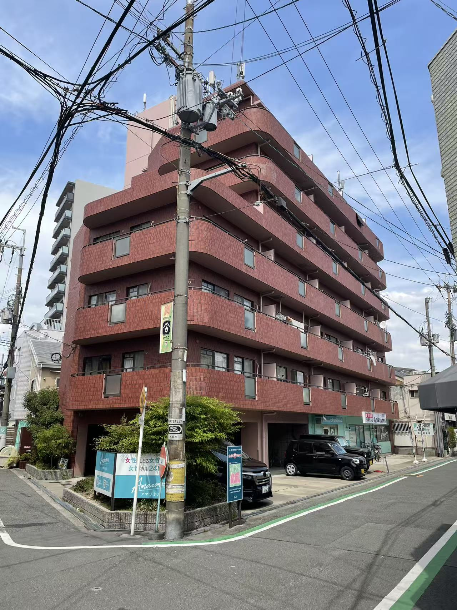

お問い合わせ
大阪市淀川区十三東四丁目5番10号ヴィラエスポア一ル201室
📧 hedan7965@gmail.com
📞 070-8557-7965；070-9011-7891



美容 · お灸 · 健康サービス
当社は、多角的な事業展開を軸とする総合企業であり、貿易事業、健康・美容サービス、音楽文化の交流および発信、ならびに飲食事業の運営を行っております。貿易分野においては、安定かつ効率的なサプライチェーンの構築に努め、日中および国際間における優良商品の流通と協力関係の促進を目指しております。健康・美容分野では、東洋の養生理念と現代的なサービスを融合し、安心で質の高い健康管理および美容サービスを提供しております。また、音楽文化分野においては、日中間の文化交流を積極的に推進し、音楽制作やイベント企画、文化発信を通じて、国境を越えたコミュニケーションの架け橋となることを目指しております。飲食事業においては、品質と体験を重視し、独自性のあるブランドづくりを通じて、お客様に心地よい空間とサービスを提供しております。今後も、革新を原動力に各事業の連携を強化し、文化とビジネスを結ぶ総合プラットフォーム企業としての成長を目指してまいります。
・お灸は、熱で体のツボを刺激し、血行を促進して体のバランスを整える、伝統的な健康法です。
・顔の美容ケアは、肌の調子を整え、顔の巡りを良くしながら、リラックス効果でストレスの軽減にもつながります。
・体をリラックスさせ、疲労や冷えを和らげます。マッサージと組み合わせることで、筋肉の緊張をさらにほぐし、局所的な不調を改善し、全身のリラックス感や睡眠の質の向上にもつながります。
大阪市淀川区十三東四丁目5番10号ヴィラエスポア一ル201室
📧 hedan7965@gmail.com
📞 070-8557-7965；070-9011-7891
